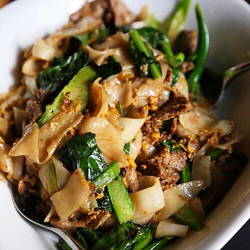
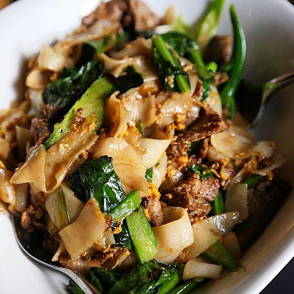

Food
Putting Vietnamese cuisine on the map
By Andrew Nguyen
July 31, 2022, at 11:59 pm
The iconic red guide book founded by brothers Andrew and Edouard Michelin in 1889 featured maps, instructions on how to change a tire and where to fill up with fuel. In the 1920s, the guide would add a list of hotels in Paris as well as a list of restaurants.
As of writing, there are more than 15,000 restaurants in the guide, but less than 1 percent of them Vietnamese.
Currently, no Vietnamese restaurant has a Michelin star, though several were awarded the "Bib Gourmand," the culinary handbook's version of an honorable mention.
Last month, Vietnam's national tourism agency made its culinary aspirations clear on a call with the French embassy in Vietnam that they want the country's food recognized by the Michelin Guide.
Vietnamese food had its moment in the spotlight in 2016 when former U.S. President Barack Obama shared a meal of bun cha with Anthony Bordain in Hanoi.
Since then, nearly all of the Vietnamese restaurants recognized by Michelin in New York have opened within the last five years.
A renaissance in New York
There are a total of 37 Vietnamese restaurants in the Michelin Guide. More than 50 percent of the restaurants are located in the United States.
New York leads all cities with five Vietnamese restaurants in the guide followed by Bangkok, Chicago and Tokyo with three each.
What does Vietnamese modern cuisine look like?
To answer this question, we scraped the menus of five Vietnamese restaurants in New York that were recognized by the Michelin Guide, which include Falansai, Thai So'n, Di An Di, Van Da and Bolero.
Noodles, which appear in dishes such as pho, bun bo hue (spicy beef noodle soup) and goi cuon (spring rolls) are the key ingredient in Vietnamese cuisine appearing more than 40 times, often accompanied by a variety of proteins such as beef, shrimp, pork.
Lemongrass, fish sauce and chili, which round out the top ten give Vietnamese cuisine its balance of aromatics, heat and funk.
These restaurants are putting their own unique spin on familar dishes such as Di An Di's "Vietnamese pizza," which uses grilled rice paper or Falansai's "Dac Biet" tasting menu.
Some of the menus feature unique ingredients predominately used in other cuisines such as frog legs, wagyu beef, koji, yuzu and even Old Bay seasoning.
Code and analysis for this project can be found on Github.

 
